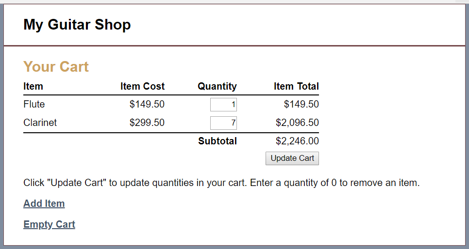
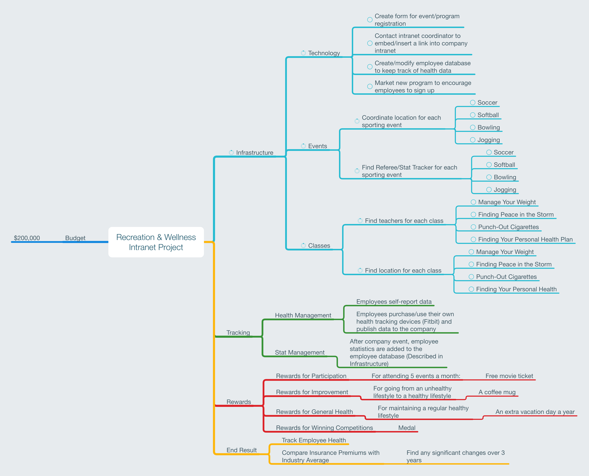

Goal 5
Apply information system life cycle techniques in problem solving
Programming in PHP
Source Code
PHP is considered one of the less-popular server-side languages in the modern web-stack. Instead, many developers choose a language like Node.js, or Ruby, or one of the many other varieties that exhist now. However, I believe that PHP still has a place in the modern web landscape. I don't think there is any better proof then Pinboard. Sure, Facebook and Wordpress both also use PHP, however I belive Pinboard to be an ethically superior choice then the two other choices I presented. Pinboard is described as "a social bookmarking site for introverts". The site uses PHP to not only build the user interface for the site, but also to encrypt each user's data. That's why I'm very happy I learned PHP.
As I've asked myself multiple times by now, what did I learn? I learned how to code in a server-side technology! Plus, I also learned what a server-side technology is, and how to implement it. I also learned a little about how to use MySQL instead of just SQL Server, and it was nice to see how SQL works in an environment that wasn't run by Microsoft. I'm really positive about PHP now, as opposed to before the class, and I'm very excited to start coding in it more in the future! That doesn't mean I won't look at other server-side languages, but it does mean that I might be biased towards PHP for the future.
Systems Design & Project Management
Systems Design & Project Management may sound a little dry on the surface, but in reality, this class taught me a lot about how to set up a project, what to do in the middle of a project, how to manage and utilize stakeholders of the project, and more. It has also taught me how to look at different systems when it comes to organizing information, as well as how people work and how organizations work. In fact, this could have been called Business Organizations & Project Management!
This specific document provided above is a demonstration of a technique we learned within the class when it came to drafting a WBS, or a Work Breakdown Structure. In the picture above, I used a technique called mind mapping, where I took a central idea, which was the project, and I created a web-like struture to help me find all the different aspects of the project, and where I need to get actions done. In this instance, the project was a wellness initiative to help employees at a theoretical company where health insurance costs were a major concern for the company. The company was planning for employees to volunteer to go to health classes, have fun and get excercise at sporting events with other employees, and other things. I had fun with this project, and I learned that project management didn't have to be a boring affair, but I can learn how to make meetings where we make important decisions fun, colorful, and creative.